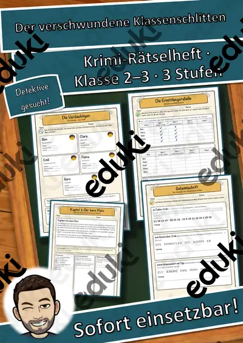

Geheimschriften – Nachrichten verschlüsseln und entschlüsseln – Lesespurgeschichte mit Rätselaufgaben (Klasse 3)
Geheimschriften – Nachrichten verschlüsseln und entschlüsseln – Lesespurgeschichte Informatik (Klasse 3/4)Schick deine Klasse auf eine Lesespur durch einen Rätselnachmittag voller geheimer Nachrichten! Kian aus der 3b und seine Freundin Frieda besuchen in den Ferien die Kinderbücherei. An der Infotheke erklärt die Bibliothekarin Frau Marquardt, was Klartext, Geheimtext, Verschlüsseln und Entschlüsseln bedeuten. Am Spiegeltisch knacken die Kinder Spiegelschrift, an der Drehscheibe verschieben sie jeden Buchstaben um drei Plätze – wie einst der Römer Julius Caesar –, und an der Zahlenwand wird aus jedem Buchstaben eine Zahl. In der Morseecke blinken sie mit kurzen und langen Signalen, im Tintenlabor schreiben sie mit Zitronensaft unsichtbar, und am Schlüsselkasten erfahren sie, warum der Schlüssel einer Geheimschrift – genau wie ein Passwort – geheim bleiben muss. Zum Schluss entschlüsseln sie die Nachricht in der Schatztruhe. Kians Stoff-Waschbär Maski ist immer dabei. Am Ende jedes Abschnitts verrät ein Hinweis den nächsten Ort auf dem Plan – nur wer genau liest, findet den Weg und sammelt alle geheimen Buchstaben zum Lösungswort.
Die perfekte Lesespur für INFORMATIK in der 3. und 4. Klasse – ideal für Projekttage, Vertretungsstunden und fächerübergreifend mit Deutsch, Mathematik und HSU: Sie verbindet sinnentnehmendes Lesen mit Codieren und Verschlüsseln, Rechnen im Zahlenraum bis 100 und einem ersten Bewusstsein für Datensicherheit. Alle gezeigten Verschlüsselungen sind fachlich korrekt und nachgerechnet. Das Material ist SOFORT EINSETZBAR und in DREI DIFFERENZIERUNGSSTUFEN (leicht ★ / mittel ★★ / schwer ★★★) angelegt.WICHTIG: Das komplette Material ist sowohl in FARBE als auch in SCHWARZ-WEISS enthalten – ideal zum Sparen von Druckkosten.DAS IST ENTHALTEN
- Lesespurgeschichte in 3 Niveaus (leicht, mittel, schwer)
- farbiger Plan der Kinderbücherei als Suchkarte
- Hörverstehen mit QR-Code zur MP3 (selbstständiges Hören mit Kopfhörern)
- vier Aufträge auf dem Weg: eine Zuordnung (Wörter verschlüsseln), ein Quiz, eine Rechenaufgabe und ein Steckbrief
- Rätselseite (Wörter-Suchsel + Fragen zu Geheimschriften)
- Ausmalbild zum Thema (Kinder schreiben mit Geheimtinte)
- ausführliches Lösungsblatt für die Lehrkraft
- alles zusätzlich als komplette Schwarz-Weiß-VarianteSO GEHT DIE LESESPURDie Kinder lesen ab START, finden im Text den nächsten Ort, suchen ihn auf dem Plan und lesen bei dieser Station weiter. An jeder richtigen Station gibt es einen Buchstaben. Eingeplante Sackgassen (Globus, Bilderbuchkiste, Zeitschriftenregal, Wasserspender) sind keine Stationen und dienen der Selbstkontrolle. Am Ende werden die gesammelten Buchstaben umgestellt und ergeben ein geheimes Lösungswort. (Die Lösungen sind selbstverständlich nur im Lösungsblatt für die Lehrkraft enthalten.)INHALTLICHER SCHWERPUNKTKlartext und Geheimtext, Verschlüsseln und Entschlüsseln, Spiegelschrift, Verschiebe-Geheimschrift nach Caesar (um 3 Plätze), Zahlencode A = 1 bis Z = 26, Morsecode als offener Code (SOS), Geheimtinte – Verstecken ist nicht Verschlüsseln, den Schlüssel geheim halten wie ein Passwort.ABGEDECKTER LEHRPLAN (Klasse 3/4, Informatik / informatische Grundbildung)
- Heimat- und Sachunterricht (LehrplanPLUS Bayern) – Jahrgangsstufe 3/4: Leben in einer Medien- und Konsumgesellschaft – Informationen übermitteln und schützen.
- Mathematik – Jahrgangsstufe 3/4: Addition und Subtraktion im Zahlenraum bis 100, Zahlen und Buchstaben einander zuordnen.
- Deutsch – Lesen: Texte sinnentnehmend lesen; Zuhören: einem Hörtext folgen (Hörverstehen mit MP3).
- Informatische Grundbildung / Medienkompetenz: Informationen codieren und verschlüsseln, Daten und Passwörter schützen.
Geeignet für Freiarbeit, Stationenlernen, Vertretungsstunden, Wochenplan, Projekttage und als Einstieg ins Thema Datensicherheit. Klassenstufe 3/4.
Ähnliche Materialien

Geheimschrift Lückentext mit Wortspeicher Hörverstehen und Suchsel

Nachrichten Lückentext mit Wortspeicher Hörverstehen und Suchsel

Krimi-Rätselheft „Der verschwundene Klassenschlitten“: eigener Fall mit Spuren, Tabelle und Geheimschrift in 3 Stufen (Klasse 2–3)

Verschlüsselung – vom Caesar-Code zum Schloss im Browser – Lesespurgeschichte mit Rätselaufgaben (Klasse 9)

Morsen und Signale – Nachrichten codieren – Lesespurgeschichte mit Rätselaufgaben (Klasse 3)

Lesespur: Wie eine Nachricht durchs Internet reist: Pakete, Router, Adressen – Lesespurgeschichte mit Rätseln (Klasse 6)

Geheime Zeichen – Bildercodes und Symbole – Lesespurgeschichte mit Rätselaufgaben (Klasse 1)